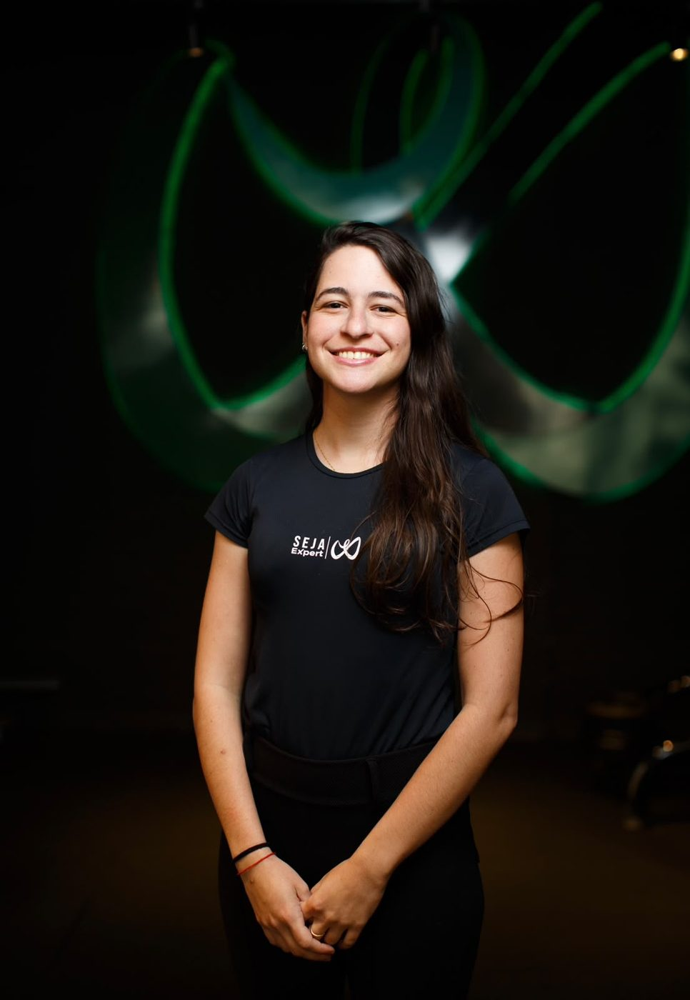
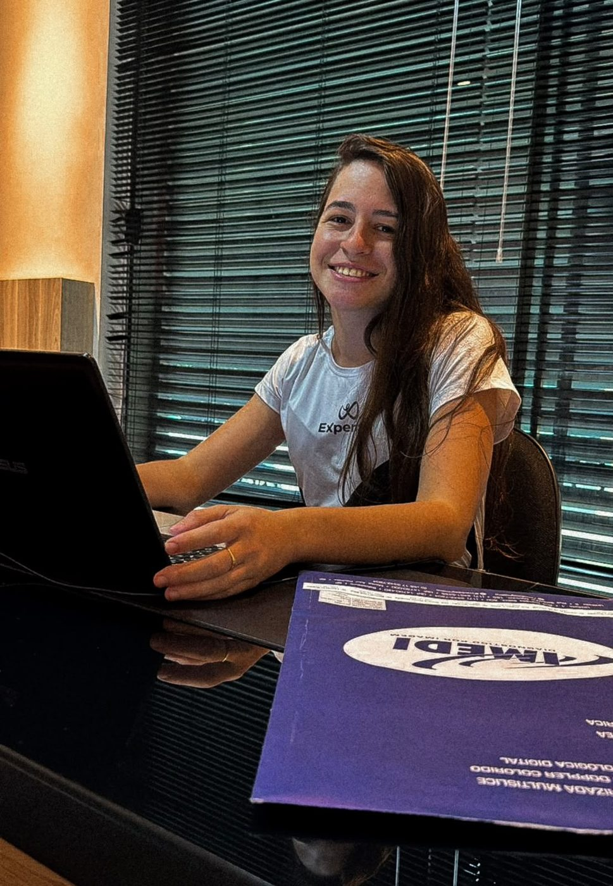
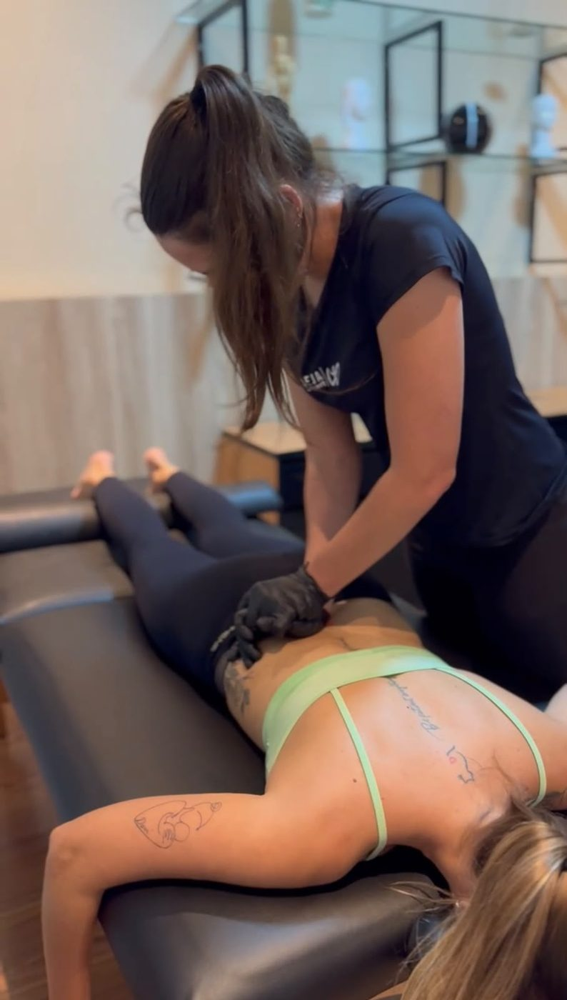
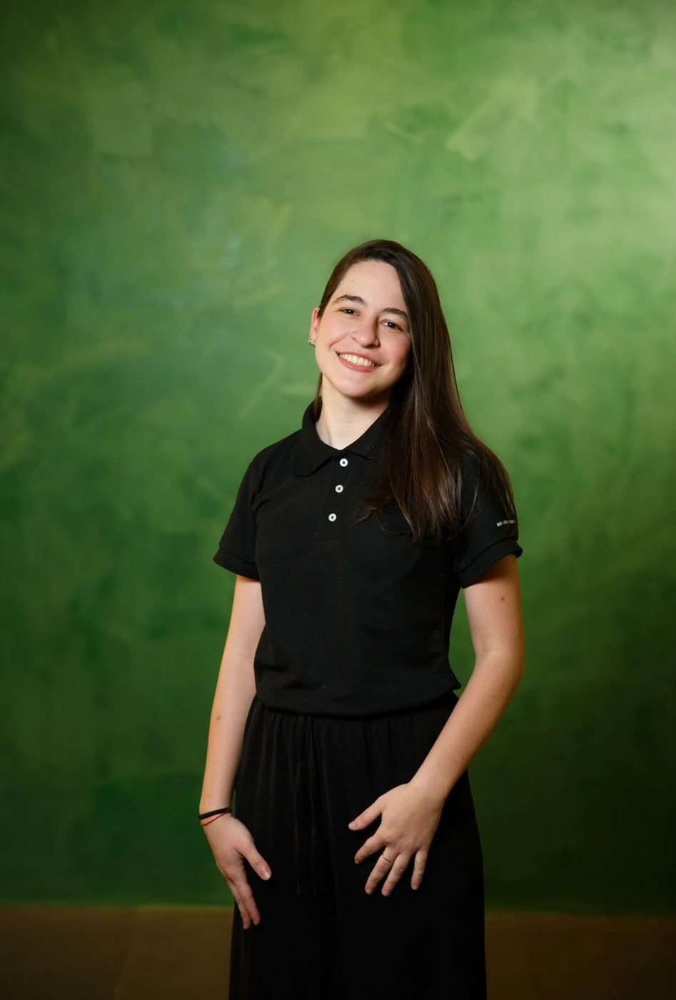

Fisioterapia traumato-ortopédica, esportiva e geriátrica para tratar a causa da dor, não só o sintoma. Um novo padrão de cuidado em reabilitação, saúde e performance.
Agendar minha avaliaçãoFisioterapia traumato-ortopédica, esportiva e geriátrica para tratar a causa da dor, não só o sintoma. Um novo padrão de cuidado em reabilitação, saúde e performance.
Se algum desses cenários faz parte da sua rotina, uma avaliação de fisioterapia é o primeiro passo para entender o que está acontecendo.
Dor lombar, cervical ou que irradia para braços e pernas e atrapalha o seu dia.
Meses convivendo com a mesma dor, tentando de tudo sem resultado duradouro.
Dificuldade em movimentos simples, insegurança ao caminhar e medo de quedas.
Reabilitação no pós-operatório para recuperar o movimento com segurança.
Cansaço e falta de força para o dia a dia, o treino ou as atividades que você ama.
Pescoço, ombros ou costas sempre travados, com a sensação de que a tensão sempre volta.
Exercícios que devolvem os movimentos do seu dia a dia com força e controle.
Identificar riscos antes que virem lesão e evoluir o seu rendimento.
Técnicas manuais e instrumentais para aliviar a dor e liberar o movimento.

Conversa sobre a sua história, análise de exames e testes físicos para encontrar a origem do problema.
Objetivos definidos com você e um plano de tratamento pensado para a sua rotina.
Terapia manual para aliviar a dor e exercícios para fortalecer e devolver o movimento.
Você sai com orientações para manter o resultado e evitar que a dor volte.
Sou fisioterapeuta com atuação em traumato-ortopedia, fisioterapia esportiva e geriatria. Meu trabalho une terapia manual e reabilitação funcional para que cada paciente volte a fazer o que ama, com menos dor e mais confiança no próprio corpo.
Sou formada em Fisioterapia pela UNIFAFIBE e há quase 3 anos ajudo pacientes a voltarem a se mover com menos dor e mais autonomia.

Formada pela UNIFAFIBE, sigo me aperfeiçoando nos casos que mais aparecem no consultório, para oferecer um tratamento atualizado e seguro.
Avaliação e tratamento direcionados para quem sofre com hérnia de disco.
Abordagem atualizada para quem convive com dor persistente.
Exercícios terapêuticos para devolver os movimentos do dia a dia.
Facilitação neuromuscular proprioceptiva para ganho de força, mobilidade e controle.
A primeira consulta é dedicada a compreender sua história, avaliar suas necessidades e identificar os fatores relevantes para o seu quadro. A partir dessa análise, definimos os objetivos terapêuticos e as estratégias mais adequadas para o seu caso.
Os atendimentos têm duração aproximada de 50 a 60 minutos, proporcionando tempo adequado para a realização das condutas terapêuticas planejadas de acordo com as necessidades e os objetivos de cada paciente. A primeira consulta inclui uma avaliação criteriosa, que orienta a definição do plano de tratamento individualizado.
Não é necessário apresentar encaminhamento médico para iniciar o atendimento fisioterapêutico particular. Caso possua exames ou relatórios relacionados à sua condição, eles poderão contribuir para a avaliação.
Cada plano é elaborado de forma individualizada, considerando sua condição clínica, seus objetivos, sua rotina e sua resposta ao tratamento. A evolução é acompanhada ao longo do processo, permitindo os ajustes necessários em cada etapa.
A evolução é monitorada por meio de avaliações e reavaliações periódicas, com parâmetros clínicos e funcionais selecionados de acordo com cada caso. São considerados aspectos como dor, mobilidade, força, desempenho funcional e capacidade para realizar as atividades do dia a dia. Esses dados permitem acompanhar os resultados de forma objetiva, ajustar as estratégias terapêuticas quando necessário e direcionar o tratamento de acordo com a resposta individual de cada paciente.
Os atendimentos são realizados de forma particular, proporcionando um acompanhamento individualizado, com avaliação criteriosa, planejamento terapêutico personalizado e atenção às necessidades de cada paciente. Caso seu plano de saúde ofereça a possibilidade de reembolso, recomendamos consultar diretamente a operadora para verificar as condições e a documentação necessária.
Clínica Expertise em Bebedouro e atendimento domiciliar nas duas cidades.
Agende sua avaliação pelo WhatsApp e receba um plano de tratamento feito para você.
Falar com a Kamyla no WhatsAppAgendar pelo WhatsApp